Supermetrics — brings reporting data from different platforms into one place.
Power BI / Looker Studio — turns the combined data into one easy-to-understand dashboard.
Typical workflow and its limitations
Meta / Google Ads
Supermetrics
Google Sheets
Power BI / Looker Studio
no linkKylas CRM
Meta and Google Ads don’t connect to the CRM, so they can’t show which leads turned into MQLs or SQLs.
Manual step: a direct Supermetrics to Power BI/Looker Studio link is expensive.
Understanding the product language
Funnel flow architecture
Leads
MQL
SQL
Deal
Abbreviations & terminology
CPL
Cost Per Lead
CTR
Click-Through Rate
MQL
Marketing Qualified Lead
SQL
Sales Qualified Lead
CMQL
Cost Per MQL
CSQL
Cost Per SQL
CAC
Customer Acquisition Cost
ROI
Return on Investment
Quick draft
Quick draft to align and explore
Built fast with light research, to align with the team before going deep and to open up for more questions.
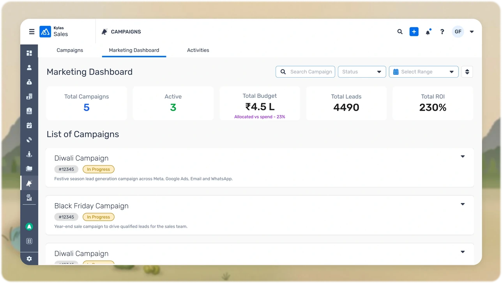
There's no point showing a list of campaigns with only a name and description and no metrics. Decisions depend on a few key metrics; detailed metrics are only for deeper analysis.
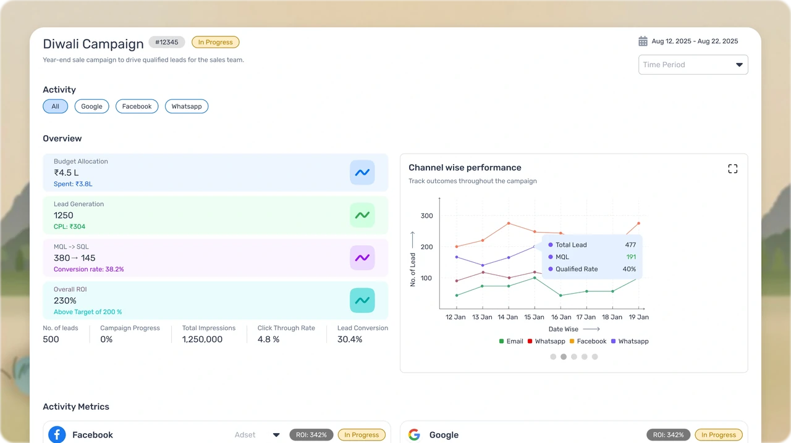
Challenges
New challenges
Stakeholders liked the direction. Their questions after seeing the draft shaped the second round of research below.
Challenge 1
Where is the data coming from?
Ad metrics come from the Facebook Ads and Google APIs, while MQL, SQL, Email and WhatsApp metrics come from Kylas CRM. The dashboard combines both.
Facebook Ads APIMetrics like Impressions, Reach, CPL, CTR, Leads etc.
Google APIMetrics like Impressions, Reach, CPL, CTR, Leads etc.
Kylas CRMMQL, SQL, Email and WhatsApp metrics
→
Marketing DashboardCombined data
Challenge 2
How will we find MQL and SQL?
Through MQL and SQL mapping, as every company defines MQL and SQL differently.
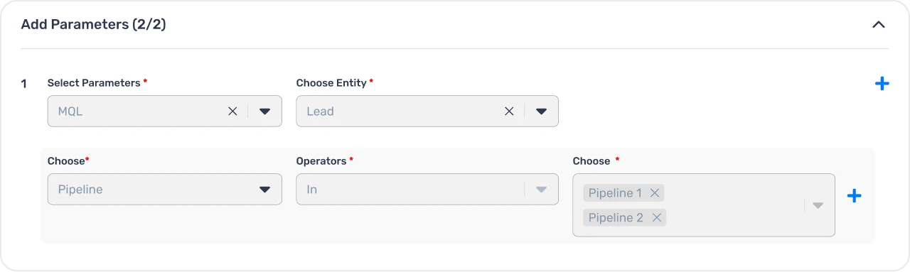
Challenge 3
How can the dashboard scale when new platforms like LinkedIn and X (Twitter) are added?
Advertising platforms follow a similar three-level hierarchy.
Structural Element
Google Ads (Search)
Facebook (Meta) Ads
LinkedIn Ads
X (Twitter) Ads
Reddit Ads
TikTok Ads
Tier 1 (Goal & Budget)
Campaign
Campaign
Campaign
Campaign
Campaign
Campaign
Tier 2 (Targeting & Bid)
Ad group
Ad set
Ad set
Ad group
Ad group
Ad group
Tier 3 (Creative/Asset)
Ad / Keyword
Ad
Ad
Ad
Ad
Ad
Budget Control
Campaign level only
Campaign / Ad group / Campaign
Campaign Group / Campaign
Campaign / Ad group
Campaign / Ad group
Campaign / Ad group
Challenge 4
We already have WhatsApp and Email. How will the new design be a part of the whole?
Facebook and Google join the existing Kylas campaign hierarchy as new channels, next to Email and WhatsApp.
At first we added the option for different dashboards. Later, we designed a single dashboard where managers see the overall picture and operators can drill down for detailed analysis.
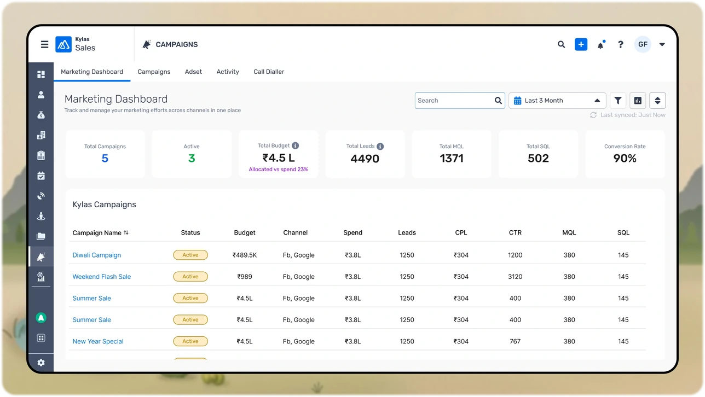
Overview: KPIs and the list of Kylas campaigns
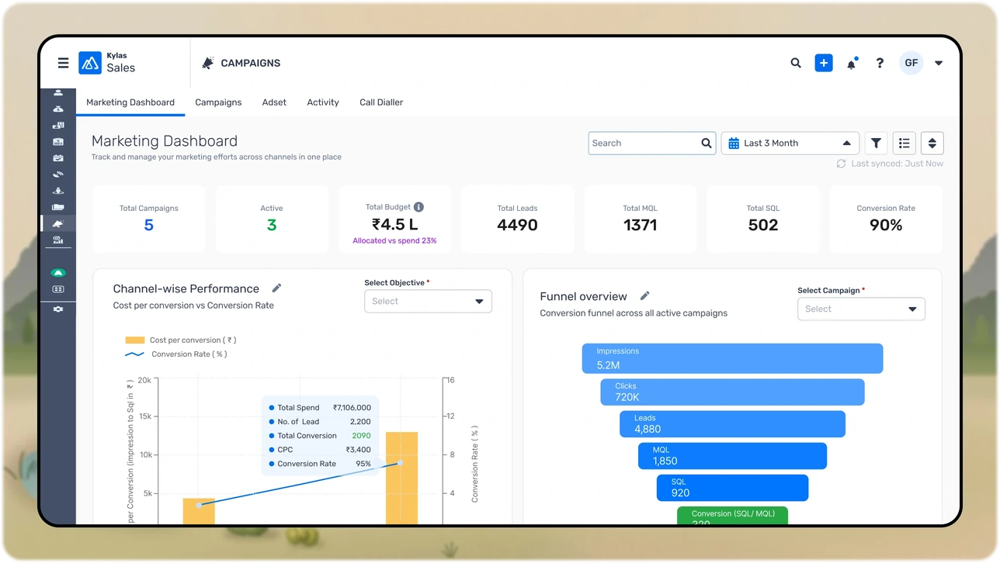
Channel-wise performance and the conversion funnel
Helps users keep track of their selected items while navigating the list.
Setting up campaigns in two steps
Step 1Connect ad accounts
Step 2Create campaign, ad set and activity
Step 1
Connect your ad accounts
Users link their Meta and Google ad accounts to Kylas before creating campaigns.
Key decision
Where should account connections live: during campaign creation, or in a separate place?
Campaign Settings has a dedicated place to manage all connected accounts. It also appears in step 2 of campaign creation if an account hasn't been connected yet.
Connect account
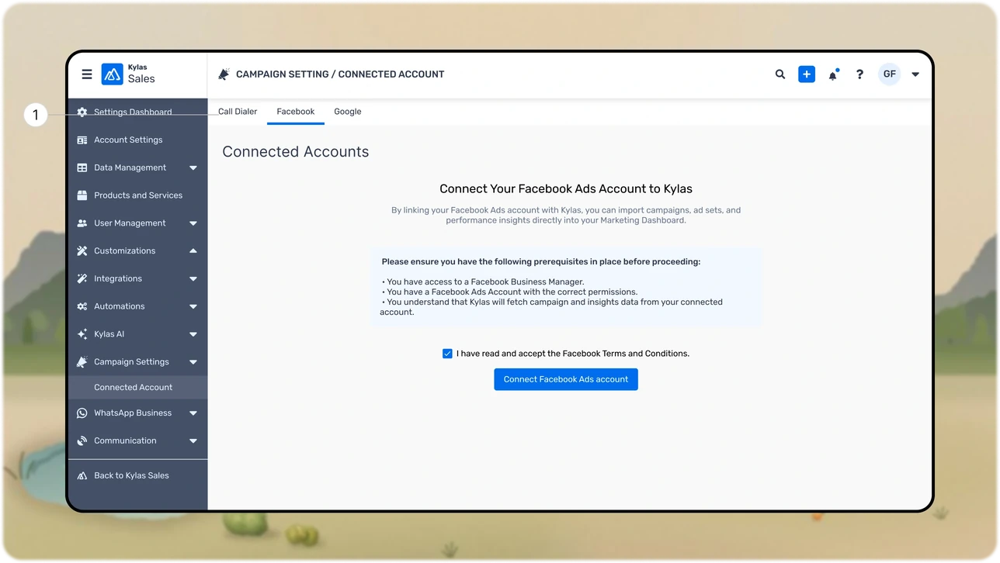
Platform tabs – keep multiple accounts organized and prevent confusion.
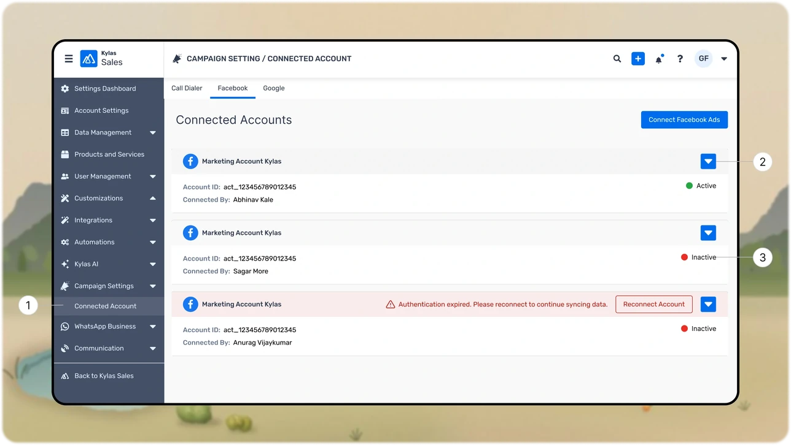
All connected accounts under campaign setting.
Connection status highlights accounts that need attention.
Cards with key account details for quick management.
Step 2
Create campaign, ad set and activity
Purpose: Define where the external campaigns will rest, and link every ad set and activity to its parent campaign for accurate reporting and tracking.
Campaign page
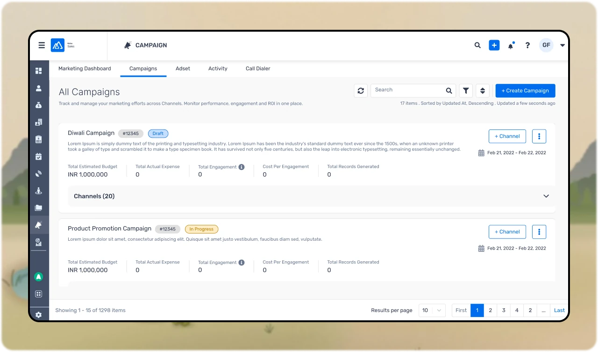
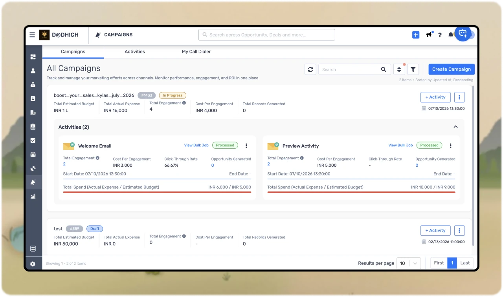
↔BeforeAfter
Key decision
In-page navigation or a stepper?
A stepper. In-page navigation occupied valuable screen space, taking up to 40% of horizontal space, and caused a lot of scrolling.
Before: in-page navigation
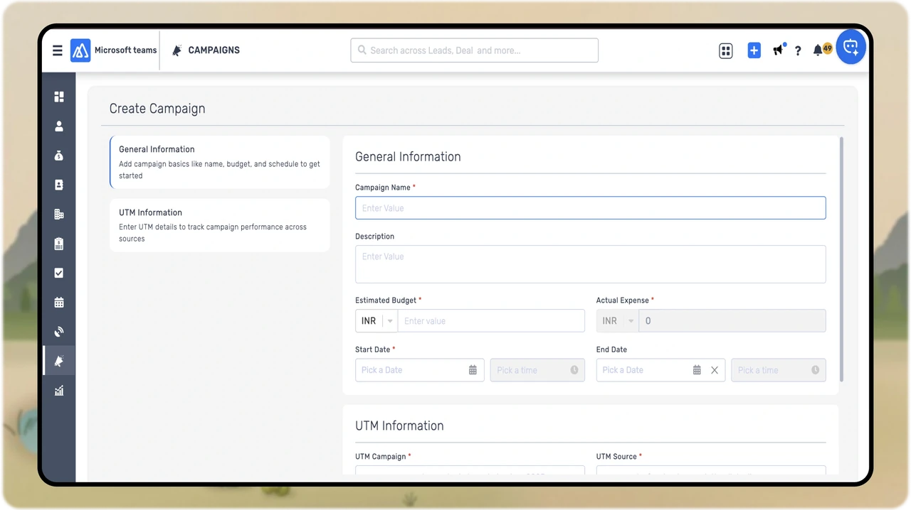
After: stepper
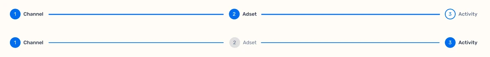
Top: in case of Facebook and Google, we will see the ad set.
Bottom: in case of Email, Call and WhatsApp, we skip the ad set and go directly to the activity (ads).
Create campaign flow
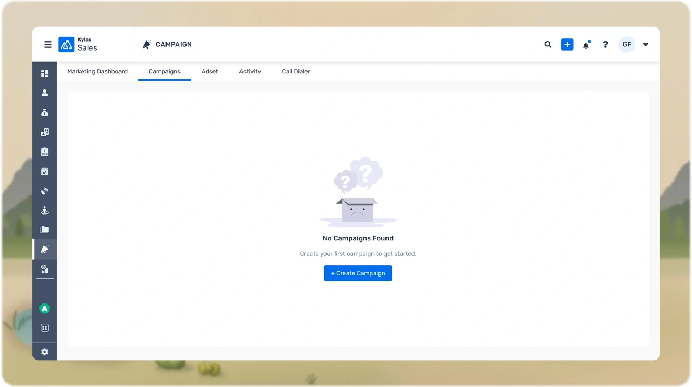
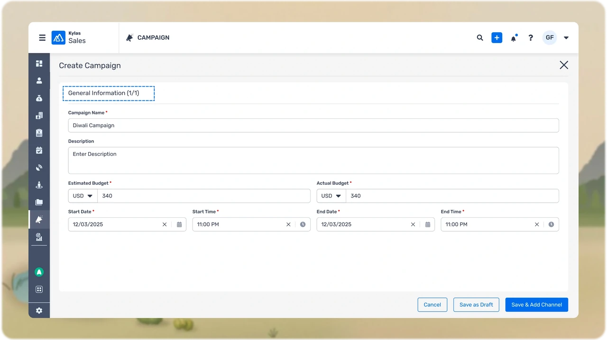
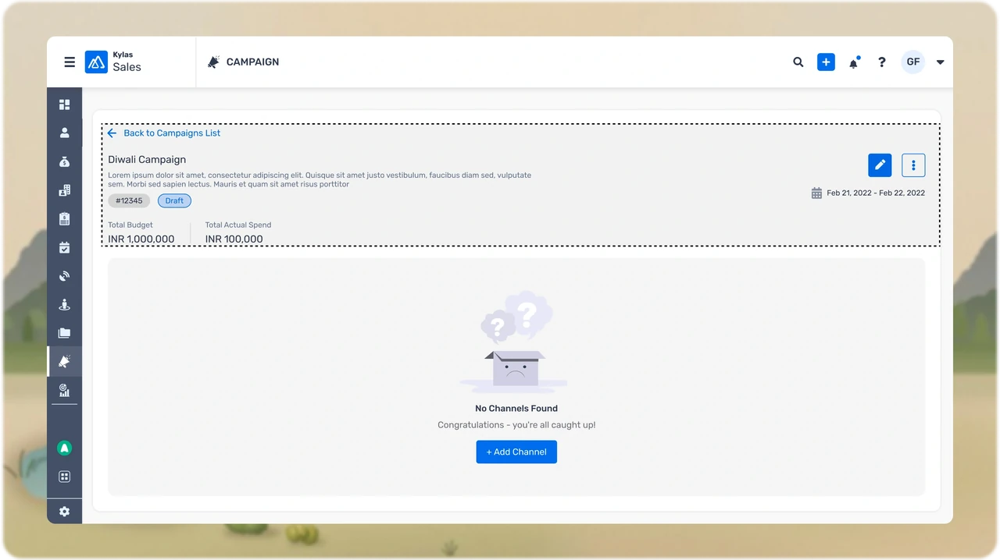
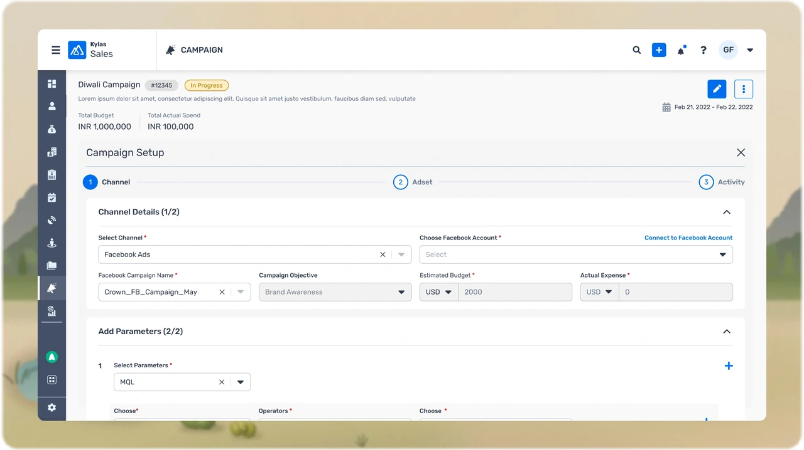
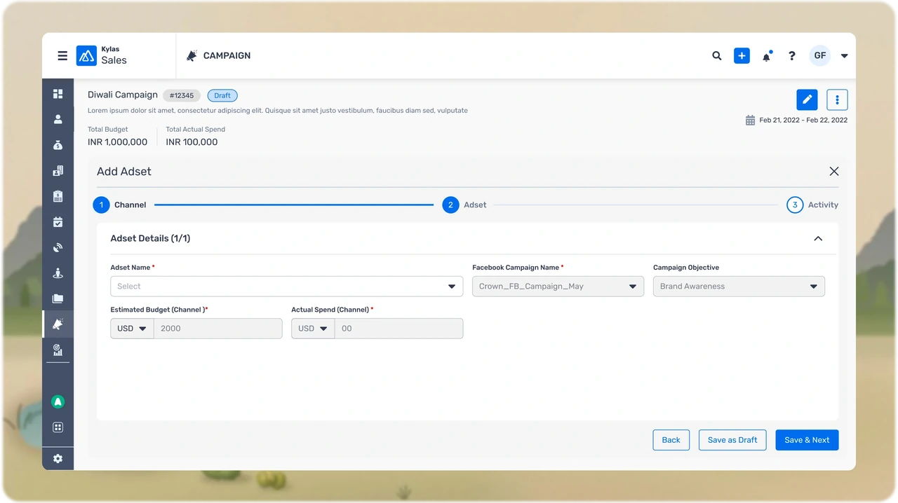
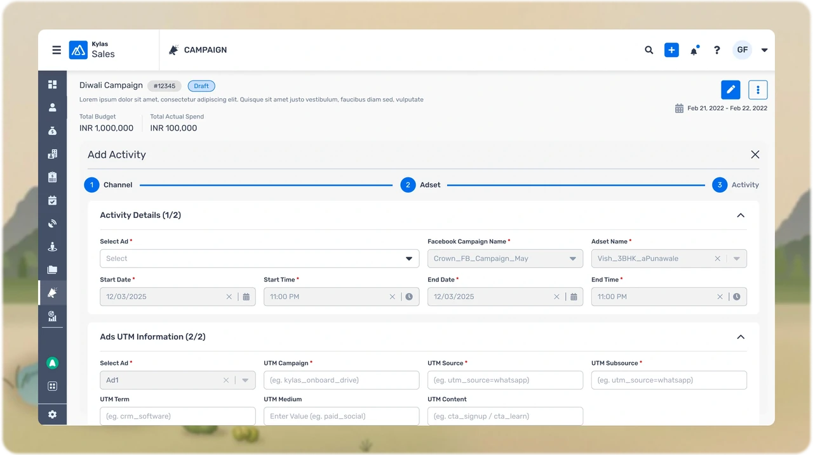
Outcome
What shipped
The Unified Marketing Dashboard is live in Kylas CRM. Meta, Google Ads, Email and WhatsApp campaigns are now tracked in one place, next to the CRM funnel.
Before
Meta / Google Ads
Supermetrics
Google Sheets
Power BI / Looker Studio
After
Meta / Google Ads + Kylas CRM
Kylas Marketing Dashboard
Future scope
Multiple ads in one go
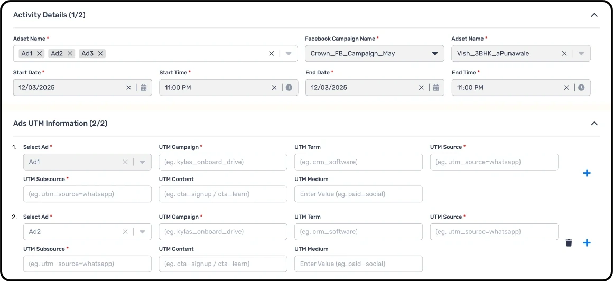
Concept: two ads added in one form
LinkedIn and X (Twitter)
Can be added easily using the same three-level campaign structure.